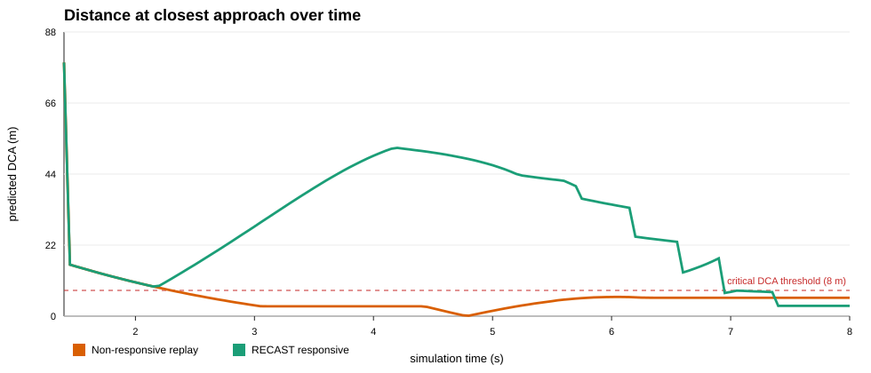

Non-responsive replay
Vehicles follow the recorded/SUMO plan; safety signals are observed after the fact.
C8_replay.mp4 in the recordings/ folder.RECAST responsive
V2V reception updates awareness and changes vehicle behavior in the loop (the slowdown response here is deliberately exaggerated for clarity).
C8_recast.mp4 in the recordings/ folder.
Event Timeline
- t=2.18sRECAST control event
Vehicle 1 applies crossing slow down.
- t=2.35sReplay enters safety violation
Non-responsive replay enters TCA <= 4s and DCA <= 8m.
- t=4.80sReplay closest approach
Replay minimum DCA is 0.12 m.
- t=5.17sRECAST control event
Vehicle 18 applies crossing slow down.
- t=6.17sRECAST control event
Vehicle 1 applies release crossing speed control.
- t=6.55sRECAST control event
Vehicle 1 applies crossing slow down.
- t=6.95sRECAST residual violation
Responsive run briefly enters the critical conflict region.
- t=7.40sRECAST closest approach
Responsive minimum DCA is 3.20 m.
Recording Inputs
Unity replay JSONs are in unity-replays/. Matching copies were also written to DT/Assets/Resources/Replays/, so Unity can load them as Resources.
Expected recording files: recordings/C8_replay.mp4 and recordings/C8_recast.mp4.
Critical conflict definition: TCA ≤ 4s and DCA ≤ 8m. Baseline min DCA: 0.12 m; RECAST min DCA: 3.20 m.